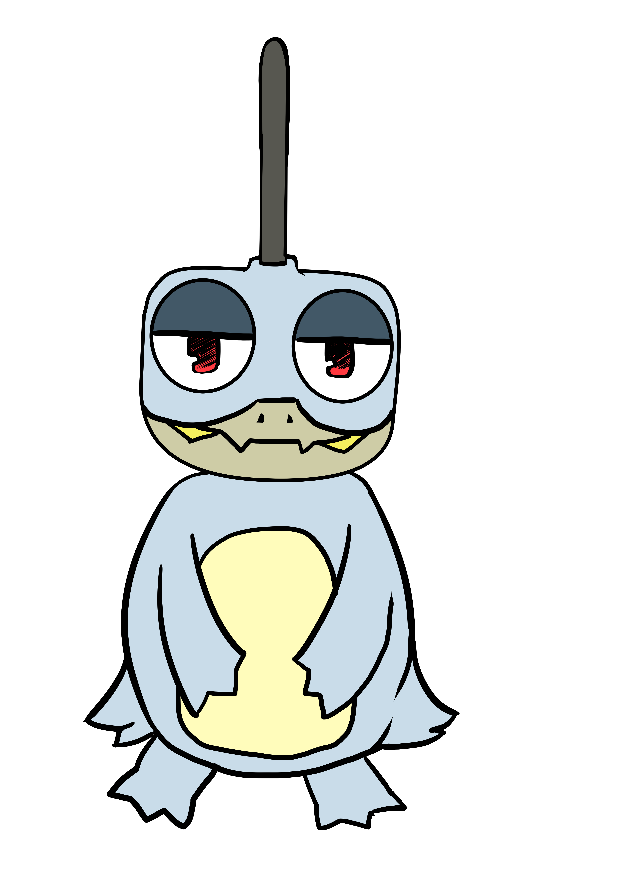
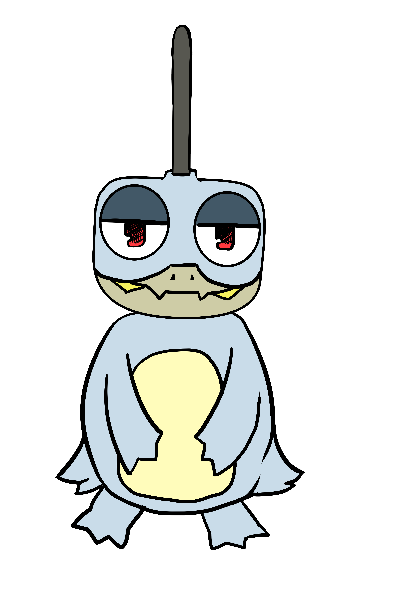

デザイナーとして面白いサイトを目指すために日々模索しています。
このサイトは、その一部ですが人事部の方々に見やすいように考慮してデザインさせていただきます。

デザイナーとして面白いサイトを目指すために日々模索しています。
このサイトは、その一部ですが人事部の方々に見やすいように考慮してデザインさせていただきます。
活動履歴
■■■ 2015 ■■■
・8月
コミケ87(8月14日)LCMF6枚目「ロリータコンプレッサVol.4」 編集＋ジャケット＋１曲目「Intro-junction」+4曲目「私はもう逃げないfeat両義」
コミケ88（8月16日） インマテ「 10ve ～6th Material～」挿絵・四コマ
ロリータコンプレッサVol.4 の手書きXFD作成、ニコニコ動画にて投稿
・6月
第7回東方ニコ童祭にて「私はもう逃げない」を投稿
・5月
コミ１★９(5月2日(土))インマテ「5th Material～桜華繚乱～」挿絵・4コマ
例大祭12(5月10日(日))LCMF4枚目「ロリータコンプレッサVol.3」編集+4曲目「空音ｰノイズｰ」
例大祭12(5月10日(日))太陽黒点にてゲスト参加「壊れかけの季節」
■■■ 2014 ■■■
・12月
コミケ87(12月29日(月))LCMF三枚目「 Lot of Life impact 」 編集＋挿絵＋6曲目「DictatorDolls」
コミックマーケット87(12月30日(火))インマテ「大図書館のマテリアル ～4th Material～」挿絵
・８月
コミケ86(8月16日(土)) LCMF二枚目「ロリータコンプレッサVol.2」 ジャケット表紙＋編集
＋4曲目「 我は死を予言するものなり 」+9曲目「あの娘の瞳に私が映ったら…」
・6月
第6回東方ニコ童祭にて「我は死を予言するものなり」を投稿
・5月
博霊神社例大祭11(5月11日(日))LCMF一枚目「ロリータコンプレッサーVol.1」ジャケット表紙＋編集＋4曲目「シキガミロリロック」
■■■ 2013 ■■■
・12月
コミックマーケット85-早稲田アイマス研究会「Start Vol.２」挿絵
・6月
第５回東方ニコ童祭にて「赤蛮奇のデュラハン」を投稿